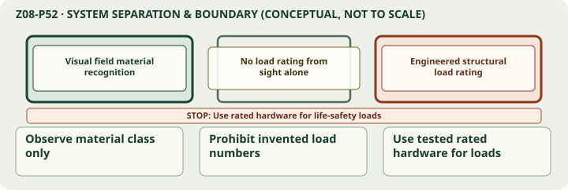

Z08-P52 · Rocks, minerals and materials · New manuscript
Separating Visual Material Recognition from Structural Certification
Prevent field observation of rock, wood, or fiber from being misrepresented as an engineering load capacity or anchor rating.
When it applies · All Z08 material profiles linked to Z02 shelter, Z09 tools, and Z12 environments.
Equipment · Tested rated commercial hardware when structural loads exist.

Actions
- Keep visual field identification of rock outcrops, timber poles, and plant fibers strictly distinct from engineering load ratings or safe working loads.[R03, R15, R18]
- Never publish or estimate unverified pound, kilogram, or kilonewton capacities for wild wood spans, rock anchors, or hand-twisted cordage.[R15, R18, K06]
- Use manufacturer-rated, inspected equipment installed per qualified instructions whenever human safety or heavy loads depend on a support.[R15, K06]
Failure recognition · Equating a sound-looking log or rock ledge with a certified anchor leads to catastrophic collapse under dynamic or wet loads.[R15, R16, K06]
Verify · Every material description states observable limits without inventing structural capacity figures.[R15, R18]
Stop or change course · Stop any construction or rigging plan that relies on unverified wild stone, timber, or natural fiber for life safety.[R15, R18, K06]
Evidence and editorial notes
- K06 · NPS · Forces and Tools (current web edition)
- Section: Forces and Tools > Simple Machines and Mechanical Advantage · Conditions: Levers, wedges, inclined planes and friction mechanisms
Support: Simple machines trade force for distance (levers, wedges, pulleys); friction, alignment and material strength limit real-world output below ideal ratios.
Limitations: Ideal mechanical advantage ignores friction losses and breaking strength of ropes or anchors. · Conflicting evidence: None; clarifies physical trade-offs without implying engineered load ratings.
Editorial note: Anchors mechanical-advantage, wedge-splitting and pulley/rigging limit cards. · Specialist reviewer: Mechanical engineering and rigging safety
Primary source · checked 2026-11-24 - R03 · USGS · Collecting Rocks: Rock Classes and Mineral Property Basics (USGS GIP)
- Section: Igneous, sedimentary, and metamorphic rock classes · Conditions: Field rock class screening without laboratory petrography
Support: Observable grain interlocking, layering, bedding, or foliation helps separate broad rock classes.
Limitations: Weathered rinds and fine-grained dark rocks frequently mimic other classes visually; hand-lens inspection is preliminary only. · Conflicting evidence: None noted.
Editorial note: Establishes non-destructive classification limits. · Specialist reviewer: Field geologist
Primary source · checked 2026-11-25
Current assessment · A04-R03 (2026-11-25) · Bounded support confirmed (A04): Grain arrangements, bedding and foliation can help screen broad classes. Classification also depends on origin and composition. Limits: Specialist review PENDING (Field geologist); publication HOLD. All release decisions pending. - R15 · Minnesota DNR · Native Trees of Minnesota Identification Reference (Current web edition)
- Section: Regional wood species, grain, bark, and moisture variability · Conditions: Dead downed wood and natural bast fibers in Upper Midwest forests
Support: Wood density, grain straightness, resin content, and decay state vary widely by species, tree part, and moisture history.
Limitations: Visual grain inspection cannot certify structural load capacity; avoid cutting live trees where prohibited and reject punky or cracked wood. · Conflicting evidence: None noted.
Editorial note: Reconciles B007 wood notes with material limits. · Specialist reviewer: Forestry and wood-science specialist
Primary source · checked 2026-11-25 - R16 · Minnesota DNR · Rocks and Minerals of Minnesota Educational Guide (Current web edition)
- Section: Sedimentary limestone, sandstone, and shale permeability · Conditions: Southeastern Minnesota karst, bluff, and river-valley sedimentary strata
Support: Sandstone, limestone, and shale differ sharply in cementation, porosity, and fissility, governing weathering and cliff instability.
Limitations: Karst bluffs and fractured shales shed rockfall unpredictably; visual inspection cannot certify slope or load stability. · Conflicting evidence: None noted.
Editorial note: Covers Upper Midwest sedimentary rock hazards. · Specialist reviewer: Engineering geologist
Primary source · checked 2026-11-25 - R18 · Minnesota DNR · Minnesota Native Plant Communities and Biomes (Current web edition)
- Section: Natural plant fiber harvest limits and conservation ethics · Conditions: Bast fibers, rushes, sedges, and woody stems in regional biomes
Support: Harvesting fibrous plants without landowner permission or in protected native plant communities damages ecosystems and may violate law.
Limitations: Strength of hand-twisted plant cordage varies sharply with retting, moisture, and knots; never assign life-safety loads. · Conflicting evidence: None noted.
Editorial note: Connects Z08 fibers to Z09 load limits and law. · Specialist reviewer: Botanist and materials specialist
Primary source · checked 2026-11-25
Current assessment · A04-R18 (2026-11-25) · Open: support partial or missing (A04): Site limits are supported. Broader landownership and habitat-effect statement needs site and specific governing authority. Limits: Specialist review PENDING (Botanist and materials specialist); publication HOLD. All release decisions pending.
Source lineage · New manuscript (Z08 P16 governance boundary) · Classification · New manuscript.